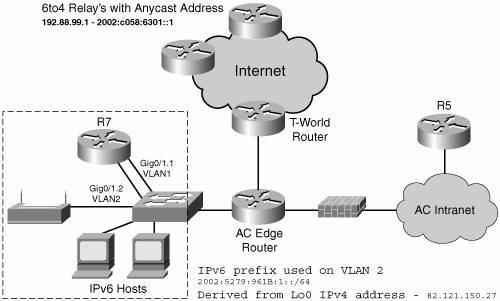
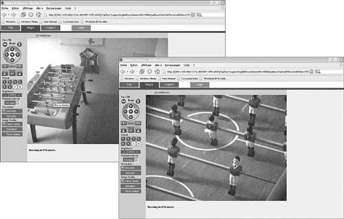
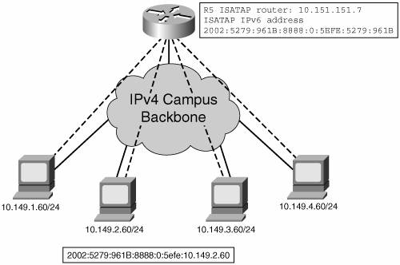
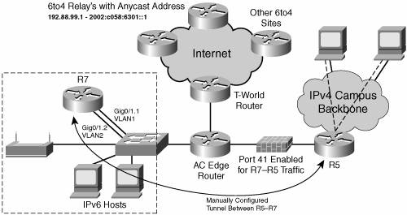

Learning the Technology
While visiting Japan (refer to http://www.v6pc.jp/en/showcase/showroom/index.html and http://www.ipv6style.jp/en/action/20030328/index.shtml for details), the CEO saw a demonstration of IPv6. Back from his trip to Asia, he asks the IT team to study the impact of this new technology. He is interested in the potential application of some of the new industrial and consumer devices, such as IP video surveillance cameras and industrial sensors, as well as the mobility aspect of accessing those resources.
IT team members have participated in a couple of IPv6 events, but no fiscal-year budget has been planned for any IPv6-related activity. It is decided to open a trial with several tasks to educate the team about IPv6 in real life and evaluate the integration of the technology for deployment of new applications.
The tasks are defined to tackle the following topics:
Configuration and management of IPv6 routers on a single site Configuration and management of IPv6 hosts on a single site with a defined set of applications Configuration of IPv6 Internet connectivity, including security setup Expansion of IPv6 between selected AC sites and evaluation of "transition" mechanisms
A team leader is chosen at the San Francisco headquarters to manage the project. Initial project tasks consist of the following:
Provisioning the appropriate equipment - Routers Cisco 2821 routersnamed R7 and R5, as shown on Figure 15-3with 256 MB of memory and 64 MB of Flash, integrated 10/100/1000 Mbps Ethernet interfaces, loaded with Cisco IOS 12.4(2)T Advanced Enterprise Services image.

- Hosts IPv6-enabled laptops running Microsoft Windows XP SP1 will be used. Other operating systems can be selected for evaluation, too. If both Microsoft Windows XP and Linux need to be validated on a single PC, a user can run Linux Knoppix v3.9, which boots from a CD-ROM. IPv6 video surveillance camera, such as Panasonic BB-HCM381. - Miscellaneous Layer 2 switch to connect the equipment. 802.11 access point to validate IPv6 over WiFi operation.
Selecting a set of IPv6 applications Although all current operating systems do support dual stack, it does not mean all applications can benefit from the IPv6 network layer. At the time of this writing, several websites (for instance, the 6NET Project, at http://www.ipv6.org/v6-apps.html193.55.253.34/WP5Apps/Applications.html) provide a list of software, either commercial or experimental, that can be installed to evaluate IPv6. The AC IT team will start the testing with the following well-known basic applications: - - Ping Available from all implementations; basic requirement to check the connectivity between devices.
- - Traceroute Available from all implementations; basic requirement to verify the Internet connectivity.
- - Web browser Such as Internet Explorer 6.0 and Mozilla Firefox 1.0.4 to access well-known IPv6 websites as well as the IPv6 video camera.
- - Multimedia streaming For instance, Videolan Client 0.8.1 as its client version allows generating a network stream using IPv6 unicast and multicast or Microsoft Windows Media & Server version 9.0 or 10.0.
Define an IPv6 addressing scheme for the trial. - To meet the objectives of the different tasks and get full IPv6 Internet connectivity during the trial, an addressing scheme must be selected. It can be either a production prefix assigned by a provider, or 6to4 prefixes as introduced in Chapter 3, "Delivering IPv6 Unicast Services" (RFC 3056). It is decided to go with 6to4 because of the simplicity of the mechanism, no dependency on a service provider because each site with a global IPv4 address can configure these prefixes, and the 6to4 tunneling is commonly available on various platforms. - The test bed will be expanded later to include ISATAP and manually configured tunnels; the IPv6 addressing scheme is planned for these extensions as shown in Table 15-2. Table 15-2. Addressing Scheme for the IPv6 TrialSite | 6to4 Prefix 2002::/16 | Public IPv4 address (82.121.150.27) from R7 interface Lo0 | Subnet ID | Interface ID |
|---|
Router R7 6to4 router
Native IPv6 on VLAN2 | 2002 | 5279:961B: | 0001 | Can be EUI-64 or manual or privacy (hosts) | Router R5 ISATAP | 2002 | 5279:961B: | 8888 | ISATAP value | Routers R7 and R5 configured tunnel link | 2002 | 5279:961B: | 0003 | Can be EUI-64 or manual |
- It is well understood by the AC IT team that this addressing scheme is a temporary solution defined for this trial. Mechanisms such as 6to4 and ISATAP have inherent limitations (for instance, the lack of IPv6 multicast support or the mandatory need to keep an IPv4 address to build the IPv6 address or prefix). This may not be suitable for a production deployment.
With all the equipment now ready, the trial can begin with a setup as shown in Figure 15-3. Routers and hosts are attached on a layer 2 switch configured with two VLANs, one for the IPv6 test segment, the other to enable external IPv4 connectivity on the DMZ segment. For security reasons, the initial setup does not permit communications between the IPv6 segment and AC internal network.
A first router, a Cisco 2821 (router R7 in Figure 15-3), is set up for a basic IPv6 configuration, as shown in Example 15-1, which consists of the following:
Enabling IPv6 routing on Cisco IOS routers through the ipv6 unicast-routing command, and IPv6 Cisco Express Forwarding (CEF). Note
IPv6 CEF requires IP CEF to be configured to enable fast processing of IPv6 packets.
An interface GigaEthernet 0/1.2 configured for native IPv6 to act as gateway on VLAN2, where the IPv6 hosts will be attached An interface Tunnel0 configured as a 6to4 tunnel with the IPv6 address of the interface GigaEthernet 0/1.2 and IPv4 address of interface Loopback0 A static route for 6to4 prefix 2002::/16 pointing on Tunnel0 A default route ::/0 pointing to the 6to4 relay anycast address as documented in Chapter 3
Example 15-1. IPv6 Configuration of Router R7
R7#show running
ip cef
ipv6 unicast-routing
ipv6 cef
!
interface Tunnel0
no ip address
no ip redirects
ipv6 unnumbered GigabitEthernet0/1.2
tunnel source Loopback0
tunnel mode ipv6ip 6to4
!
interface Loopback0
ip address 82.121.150.27 255.255.255.255
!
interface GigabitEthernet0/1.2
description === IPv6 vlan ===
encapsulation dot1Q 2
ipv6 address 2002:5279:961B:1::/64 eui-64
!
ipv6 route 2002::/16 Tunnel0
ipv6 route ::/0 2002:C058:6301::
R7#
|
Example 15-2 displays the status of the IPv6 interfaces on router R7 and illustrates their IPv6 addresses.
Example 15-2. IPv6 Interface Status on Router R7
R7#show ipv6 interface
GigabitEthernet0/1.2 is up, line protocol is up
Description: === 6to4 vlan ===
IPv6 is enabled, link-local address is FE80::20D:BDFF:FE99:F5F9
Global unicast address(es):
2002:5279:961B:1:20D:BDFF:FE99:F5F9, subnet is 2002:5279:961B:1::/64 [EUI]
Joined group address(es):
FF02::1
FF02::2
FF02::1:FF99:F5F9
MTU is 1500 bytes
ICMP error messages limited to one every 100 milliseconds
ICMP redirects are enabled
ND DAD is enabled, number of DAD attempts: 1
ND reachable time is 30000 milliseconds
ND advertised reachable time is 0 milliseconds
ND advertised retransmit interval is 0 milliseconds
ND router advertisements are sent every 200 seconds
ND router advertisements live for 1800 seconds
Hosts use stateless autoconfig for addresses.
Tunnel0 is up, line protocol is up
IPv6 is enabled, link-local address is FE80::5279:961B
Interface is unnumbered. Using address of GigabitEthernet0/1.2
No global unicast address is configured
Joined group address(es):
FF02::1
FF02::2
FF02::1:FF79:961B
MTU is 1480 bytes
ICMP error messages limited to one every 100 milliseconds
ICMP redirects are enabled
ND DAD is not supported
ND reachable time is 30000 milliseconds
Hosts use stateless autoconfig for addresses.
|
Example 15-3 shows how to verify the status of the two static IPv6 routes on router R7.
Example 15-3. IPv6 Routing Status on Router R7
R7#show ipv6 route
IPv6 Routing Table - 6 entries
Codes: C - Connected, L - Local, S - Static, R - RIP, B - BGP
U - Per-user Static route
I1 - ISIS L1, I2 - ISIS L2, IA - ISIS interarea, IS - ISIS summary
O - OSPF intra, OI - OSPF inter, OE1 - OSPF ext 1, OE2 - OSPF ext 2
ON1 - OSPF NSSA ext 1, ON2 - OSPF NSSA ext 2
S ::/0 [1/0]
via 2002:C058:6301::1
S 2002::/16 [1/0]
via ::, Tunnel0
C 2002:5279:961B:1::/64 [0/0]
via ::, GigabitEthernet0/1.2
L 2002:5279:961B:1:20D:BDFF:FE99:F5F9/128 [0/0]
via ::, GigabitEthernet0/1.2
L FE80::/10 [0/0]
via ::, Null0
L FF00::/8 [0/0]
via ::, Null0
|
After setting up IPv6 on router R7, it is now the time to look at an IPv6 host configuration; the example is done on Microsoft Windows XP SP1. Hosts will get their IPv6 address through the stateless autoconfiguration.
The IPv6 address is built after receiving Router Advertisement messages. There are three IPv6 addresses set on the interface:
The gateway address is the link-local address of router R7.
The value %4 at the end of the link-local and gateway addresses indicates the index of the interface on the PC.
Netsh CLI is the recommended interface to set and display IPv6 parameters on Windows XP, but ipconfig commands can also be used, as shown in Example 15-4.
Example 15-4. Checking IPv6 Configuration on Microsoft Windows XP
C:\>ipv6 install
C:\>ipconfig
Windows IP Configuration
Ethernet adapter Wireless Network Connection:
Connection-specific DNS Suffix . :
IP Address. . . . . . . . . . . . : 10.87.94.8
Subnet Mask . . . . . . . . . . . : 255.255.255.0
IP Address. . . . . . . . . . . . : 2002:5279:961b:1:f86e:7f1e:e4b3:6aa9
IP Address. . . . . . . . . . . . : 2002:5279:961b:1:202:8aff:fead:a836
IP Address. . . . . . . . . . . . : fe80::202:8aff:fead:a836%4
Default Gateway . . . . . . . . . : 10.87.94.254
fe80::20d:bdff:fe99:f5f9%4
C:\WINDOWS\system32>netsh
netsh>interface ipv6
netsh interface ipv6>show address
Querying active state...
Interface 4: Wireless Network Connection
Addr Type DAD State Valid Life Pref. Life Address
--------- ---------- ------------ ------------ -----------------------------
Temporary Preferred d23h34m50s 23h33m14s 2002:5279:961b:1:f86e:7f1e:e4b3:6aa9
Public Preferred 29d23h59m39s 6d23h59m39s 2002:5279:961b:1:202:8aff:fead:a836
Link Preferred infinite infinite fe80::202:8aff:fead:a836
|
To verify the operation of IPv6, you can use the following:
Ping6 on Windows XP. In Example 15-5, we are pinging a well-known IPv6 Internet website named www.ipv6tf.org. Traceroute on Windows XP to the same destination IPv6 host, as shown in Example 15-6.
Example 15-5. Verifying Operation with IPv6 Ping
C:\>ping6 www.ipv6tf.org
Pinging www.ipv6tf.org [2001:7f9:1000:1::103]
from 2002:5279:961b:1:f86e:7f1e:e4b3:6aa9 with 32 bytes of data:
Reply from 2001:7f9:1000:1::103: bytes=32 time=415ms
Reply from 2001:7f9:1000:1::103: bytes=32 time=379ms
Reply from 2001:7f9:1000:1::103: bytes=32 time=388ms
Reply from 2001:7f9:1000:1::103: bytes=32 time=407ms
Ping statistics for 2001:7f9:1000:1::103:
Packets: Sent = 4, Received = 4, Lost = 0 (0% loss),
Approximate round trip times in milli-seconds:
Minimum = 379ms, Maximum = 415ms, Average = 397ms
|
Example 15-6. Verifying Operation with IPv6 Traceroute
C:\>tracert www.ipv6tf.org
Tracing route to www.ipv6tf.org [2001:7f9:1000:1::103]
over a maximum of 30 hops:
1 2 ms 2 ms 2 ms 2002:5279:961b:1:20d:bdff:fe99:f5f9
2 161 ms 162 ms 160 ms 3ffe:c15:c002:5000::2
3 223 ms 223 ms 223 ms 3ffe:c00:8023:29::2
4 323 ms 323 ms 321 ms us-nyc02a-re1-fe-0-0.ipv6.aorta.net [2001:730:0:4::1]
5 317 ms 314 ms 315 ms nl-ams06d-re1-t-9.ipv6.aorta.net [2001:730::1:61]
6 314 ms 314 ms 314 ms telianet-gw1.nl.ipv6.aorta.net [2001:730::1:35]
7 397 ms 507 ms 406 ms 2001:6c0:800:2009::2
8 396 ms 385 ms 384 ms 2001:7f9:1000:1::103
Trace complete.
|
Then, an IPv6 video camera is attached to the IPv6 LAN segment. Bidirectional accessreception of the images, transmission of zoom commandsof the IPv6 video camera can be demonstrated as shown in Figure 15-4.

Other applications such as web browsing or video streaming can now be installed and verified on an IPv6 network layer.
Expanding the Test Bed
After successfully being able to communicate between the AC isolated IPv6 LAN segment and the IPv6 Internet, the test bed could now be expanded to include the following:
IPv6 hosts located on the AC headquarters campus An AC DNS server able to register an IPv6 AAAA record Extension of IPv6 to remote locations
Domain Name Service (DNS)
The update of DNS service to support IPv6 is one of the mandatory elements of a successful IPv6 deployment. Several functions must be considered. First, the DNS servers must be IPv6 capable (for example, a server running BIND 9 release or at least one of its derivatives). The DNS database has to be populated with the new AAAA record type, which contains the address of the IPv6 hosts. Then (optionally but recommended), the IPv6 network layer needs to be supported on the DNS servers and clients.
DNS servers on the AC network are currently running BIND version 9.3.1, so the task is limited to the configuration of IPv6 registers on the DNS server and the registration of the IPv6 resources in the database.
Note
Microsoft Windows XP does not support IPv6 network layer for its DNS Resolver application. The DNS Resolver runs over an IPv6 network layer on .NET Server 2003 (and in the future on the LongHorn release).
When querying DNS, an application might receive both IPv4 (A) and IPv6 (AAAA) records, which leaves the decision to prefer one over the other to the operating system. Failure to resolve DNS for one stack can potentially lead to a fallback to the other IP stack. Experience shows that it does not always work (perhaps because of a stack or a network connectivity issue). For this reason, AC would start the deployment with a specific naming for IPv6 resources: www.ipv6.ac.com to avoid impacting end users. It is also a way to control the deployment of IPv6 applications, because, generally, names are preferred over IPv6 addresses by end users accessing a given resource. It is expected that .ipv6 can be removed in the future.
Example 15-7 illustrates a DNS record for an IPv6 news website, showing the following:
Example 15-7. DNS Lookup to Resolve a Name and IPv6 Address
C:\WINDOWS\system32>nslookup
Default Server: dns-sjk.cisco.com
Address: 171.68.226.120
> set type=all
> ipv6.hs247.com
Server: dns-sjk.cisco.com
Address: 171.68.226.120
Non-authoritative answer:
ipv6.hs247.com AAAA IPv6 address = 2001:1638::4:2
hs247.com nameserver = ns1.rdns.de
hs247.com nameserver = ns2.rdns.de
ns2.rdns.de internet address = 84.200.3.7
>
> www.hs247.com
Server: dns-sjk.cisco.com
Address: 171.68.226.120
Non-authoritative answer:
www.hs247.com AAAA IPv6 address = 2001:1638::4:2
www.hs247.com internet address = 82.211.48.7
hs247.com nameserver = ns2.rdns.de
hs247.com nameserver = ns1.rdns.de
ns2.rdns.de internet address = 84.200.3.7
>
> ipv4.hs247.com
Server: dns-sjk.cisco.com
Address: 171.68.226.120
Non-authoritative answer:
ipv4.hs247.com internet address = 82.211.48.7
hs247.com nameserver = ns1.rdns.de
hs247.com nameserver = ns2.rdns.de
ns2.rdns.de internet address = 84.200.3.7
>
|
ISATAP Router
The first step of the trial is to enable IPv6 connectivity to the Internet for hosts located on an isolated segment. The next step is to evaluate IPv6 communications within the headquarters campus. The population of end users selected to participate in this evaluation is too small to justify an upgrade of all layer 3 switches on the campus. Nevertheless, to meet the objectives of its increasing number of users, the AC IT team set upon the intraneta second Cisco 2821 (R5)shown in Figure 15-5as an ISATAP router for use by internal AC users with manual configuration of the service. It is decided not to declare the ISATAP router into DNS to avoid the potential use of IPv6 through automatic tunneling. The IT team intends to keep the support costs and the test participants under control.

Example 15-8 shows the minimum required setting on router R5 for an ISATAP tunnel.
Example 15-8. ISATAP Configuration on Router R5
R5#
ip cef
ipv6 unicast-routing
ipv6 cef
!
interface Tunnel100
no ip address
no ip redirects
ipv6 address 2002:5279:961B:8888::/64 eui-64
no ipv6 nd suppress-ra
tunnel source Loopback0
tunnel mode ipv6ip isatap
!
interface Loopback0
ip address 10.151.151.7 255.255.255.255
!
|
After configuring router R5, you can check the status of interface Tunnel100, which is the ISATAP tunnel, as shown in Example 15-9.
Example 15-9. Displaying ISATAP Tunnel Status
R5# show ipv6 interface Tunnel100
Tunnel100 is up, line protocol is up
IPv6 is enabled, link-local address is FE80::5EFE:5279:961B
Global unicast address(es):
2002:5279:961B:8888:0:5EFE:5279:961B, subnet is
2002:5279:961B:8888::/64 [EUI]
Joined group address(es):
FF02::1
FF02::2
FF02::D
FF02::16
FF02::1:FF79:961B
MTU is 1480 bytes
ICMP error messages limited to one every 100 milliseconds
ICMP redirects are enabled
ND DAD is not supported
ND reachable time is 30000 milliseconds
ND advertised reachable time is 0 milliseconds
ND advertised retransmit interval is 0 milliseconds
ND router advertisements live for 1800 seconds
Hosts use stateless autoconfig for addresses.
|
After an ISATAP router is operational, you can enable ISATAP on Windows XP. You do so with the following command, which manually enables the use of ISATAP:
C:\>netsh interface ipv6 isatap set router 10.151.151.7
When executed on PC 10.149.2.60, you can check the ISATAP interface status (interface #2) as shown in Example 15-10.
Example 15-10. ISATAP Status on Windows XP
C:\>ipv6 if 2
Interface 2: Automatic Tunneling Pseudo-Interface
{48FCE3FC-EC30-E50E-F1A7-71172AEEE3AE}
does not use Neighbor Discovery
uses Router Discovery
routing preference 1
EUI-64 embedded IPv4 address: 10.149.2.60
router link-layer address: 10.151.151.7
preferred global 2002:5279:961B:8888:0:5efe:10.149.2.60, life 16m14s (public)
preferred link-local fe80::5efe:10.149.2.60, life infinite
link MTU 1480 (true link MTU 65515)
current hop limit 64
reachable time 31500ms (base 30000ms)
retransmission interval 1000ms
DAD transmits 0
C:\>
|
Note
This ISATAP router can later benefit the remote users connecting to the headquarters sites via VPN using the Cisco VPN Client 4.x. They can set up an ISATAP tunnel to R5 over the established IPv4 VPN (see Chapter 7, "VPN IPv6 Architecture and Services").
IPv6 Internet-to-Campus Connectivity
After the ISATAP router R5 is operational, the overall campus has local IPv6 connectivity. To complete the trial and enable the connection with the IPv6 Internet through the 6to4 router (R7), additional configurations are required:
To enable the communication between routers R7 and R5, which are on different sides of an IPv4-only firewall, the firewall must be configured to enable protocol 41 forwarding between the IPv4 addresses of both router R5 and R7. This particular setup blocks any other tunneled IPv6 connection not going through these two IT-controlled routers. Note
Configuration of the firewall is not shown because it depends on the type of device installed to perform the functions. Moreover, this configuration involves only IPv4-related settings.
After the IPv4-only firewall is set up to allow protocol 41 to go through, a tunnel can be manually configured between R5 and R7 routers, as shown in Figure 15-6. This provides the campus with access to the IPv6 Internet. Optionally, a dynamic routing protocol can be enabled to pass IPv6 routing information through the tunnel (for example, RIPng).

The manually configured tunnel setup between routers R7 and R5 is shown on interfaces Tunnel10 in Example 15-11. RIPng is also enabled on the interfaces to exchange routing information.
Example 15-11. Manually IPv6 Configured Tunnel Setup on Routers R5 and R7
On router R7
R7#
ip cef
ipv6 unicast-routing
ipv6 cef
!
ipv6 router rip v6
!
interface Tunnel10
no ip address
ipv6 address 2002:5279:961B:3::1/64
ipv6 rip v6 enable
tunnel source GigabitEthernet0/1.1
tunnel destination 172.16.2.1
tunnel mode ipv6ip
!
interface GigabitEthernet0/1.2
description === IPv6 vlan ===
encapsulation dot1Q 2
ipv6 address 2002:5279:961B:1::/64 eui-64
ipv6 rip v6 enable
!
interface GigabitEthernet0/1.1
encapsulation dot1Q 1
ip address 172.16.1.1 255.255.255.252
R7#
On Router R5
R5#
ip cef
ipv6 unicast-routing
ipv6 cef
!
ipv6 router rip v6
!
interface Tunnel10
no ip address
ipv6 address 2002:5279:961B:3::2/64
ipv6 rip v6 enable
tunnel source GigabitEthernet0/1
tunnel destination 172.16.1.1
tunnel mode ipv6ip
!
interface GigabitEthernet0/1
ip address 172.16.2.1 255.255.255.252
|
The IPv6 access to AC must be fully secured before opening the IPv6 IA to its users. Generally, the firewall does not inspect IP in IP traffic. It requires the IPv6 traffic to be filtered on R5 or R7 before it can be encapsulated in the manually configured tunnel. This can be done by setting reflexive ACLs or the via the Cisco IOS Firewall IPv6 feature set (see Chapter 9, "Securing IPv6 Networks"). Note that 6to4 tunnels can only be secured, by setting IPv4 IPsec between 6to4 routers, if used in a close environment that does not reach the IPv6 Internet through 6to4 relay.
Expanding the IPv6 Intranet Testing
With the ISATAP router up and running, all sites may now have active IPv6 end users. Nevertheless, the solution is not optimal for the remote sites because it creates a single IPv6 subnet that connects all IPv6 hosts in an overlay of the IPv4 infrastructure. An easy alternative to expand the test bed to remote locations is to set manually configured tunnels between their WAN gateway routers and the headquarters ones. For instance:
One remote site is linked to the San Francisco headquarters through a leased line. It is an opportunity to test a dual-stack configuration over a PPP connection. Routers on both ends of the links are upgraded to the same Cisco IOS release as routers R5 and R7, and then IPv6 is enabled between sites. A remote site with broadband access will have a manually configured tunnel that runs over the VPN IPsec-encrypted tunnel. An alternative is to create a secure 6to4 tunnel (see Chapter 3), but that would mean the site is not part of the intranet because the headquarters' 6to4 router (R7) is on the DMZ. Because the final IPv6 test network is limited to those two to three sites, static routes are good enough. Nevertheless, it is easy to turn on a routing protocol such as RIPng over the tunnels, as shown between R5 and R7 in the previous configuration.
Lessons from the Trial
The main conclusion at the end of the trial is that the basic IPv6 setup appears to be an easy task as long as all the prerequisite releases of software are installed. At the same time, it is clear that there is a need for more IPv6-capable applications. Evaluated operating system releases have a really limited set of applications able to run over an IPv6 network layer. It is an expected that the Microsoft next-generation operating system and Linux evolutions will result in all applications becoming more IP version agnostic. Based on the technology evaluation, the following guidelines were set:
Better to focus on IPv6 deployment by beginning with one or more applications that can run over IPv6 and is either benefiting to the enterprise business or could lower the cost of support when run over IPv6. AC will set criteria on acquisitions of new or updated applications as well as networking equipment. Products must integrate the support of IPv6, although it may not be deployed in the short term. Transition mechanisms such as 6to4 or ISATAP are easy to configure but they have some inherent limitations in terms of feature capabilities: - Do not correspond to an IPv6 global prefix as allocated by the Registries and are not optimized for routing on production IPv6 Internet - No support for IPv6 multicast - Require an IPv4 address in case of ISATAP to set the interface ID value - Add the tunnel overhead and may not deliver the best performances for communications - Make troubleshooting more complex as an operator needs to understand both IPv4 and IPv6 topology to identify a problem
For the preceding reasons, summarized in Table 15-3, on a long-term basis AC will prefer a dual-stack infrastructure when cost is not an issue.
Table 15-3. Lessons Learned from Trialing Tunnels| | 6to4 | ISATAP |
|---|
Scope | WAN | Campus | Traffic impact | Return path through 6to4 relay may not be optimum | Dependent of the campus IPv4 infrastructure | Address format | Specific prefix | Specific interface ID | Renumbering when moving to production | Yes, prefix | Yes, interface ID | Multicast support | No | No | Security | Can be secured by IPv4 IPsec when not using a 6to4 relay | Follows host security |
 |